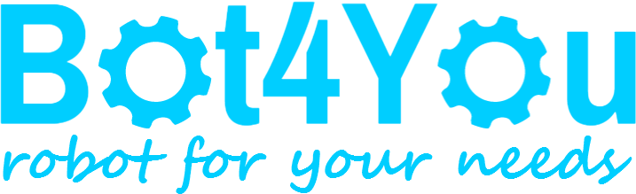
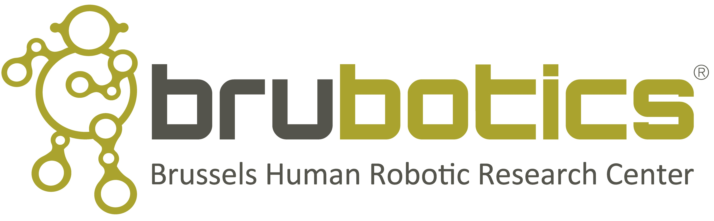

Welcome to my personal website!
I was born in Vietnam and have spent my academic life in a few countries. From Septempber 2013, I have been working in the Robotics and Multibody Mechanics research group, Vrije Universiteit Brussel, Belgium. At the mean time, I retain my position at Can Tho University as a lecturer.
My research interest is social robotics. The focus of my research is the development of robot-enhanced therapy for children with autism spectrum disorders. See DREAM's website and Probo's website.
Besides academic activities, I am now a member of Bot4You - Robot for your needs and Brubotic - The Brussels Human Centered Robotic research center.
 